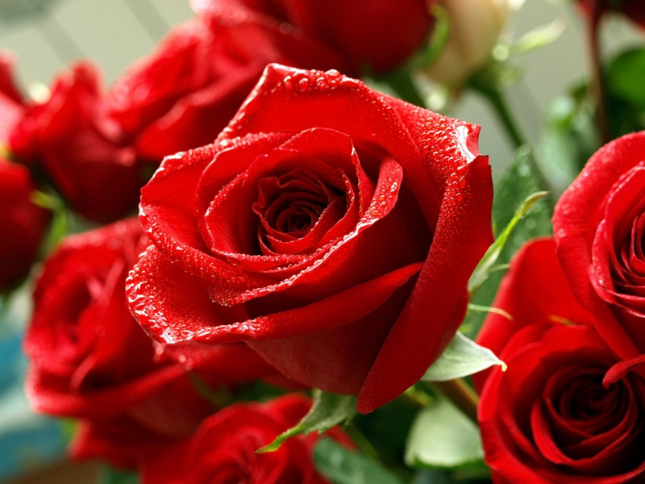
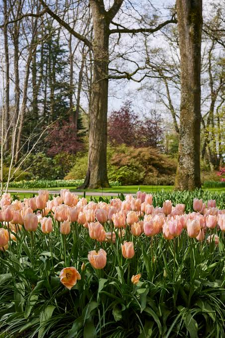
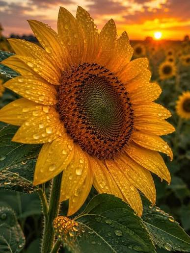
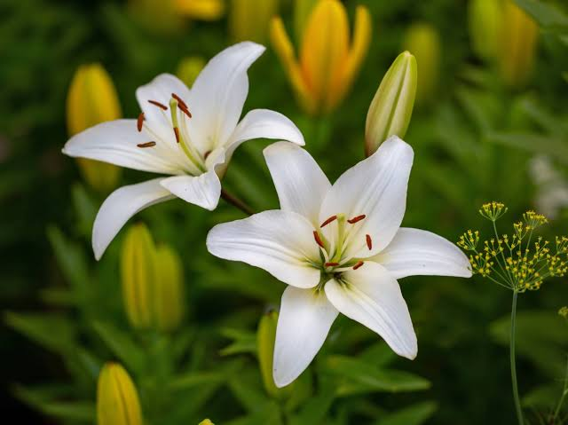
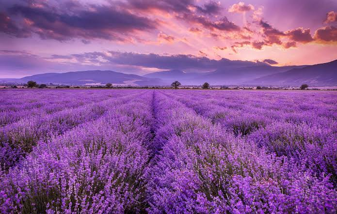
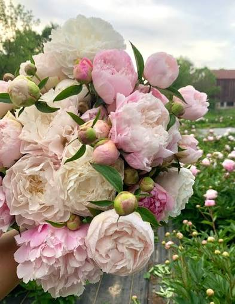

01
Rose
กุหลาบเป็นดอกไม้ที่ดูเรียบหรู และมีหลายสี แต่ละสีก็ให้ความรู้สึกต่างกัน
ElegantFLOWER FANSITE
พื้นที่เล็ก ๆ สำหรับรวมดอกไม้ที่ชอบ สีสัน ความหมาย และความสวยงามที่แตกต่างกัน
ดูดอกไม้
OUR COLLECTION
กุหลาบเป็นดอกไม้ที่ดูเรียบหรู และมีหลายสี แต่ละสีก็ให้ความรู้สึกต่างกัน
Elegant
ดอกทิวลิปมีรูปทรงเรียบง่าย สีสวย และดูน่ารักแบบไม่ต้องตกแต่งเยอะ
Simple
สีเหลืองสดของดอกทานตะวัน ให้ความรู้สึกสดใสและมีพลัง
Bright
ลิลลี่มีรูปทรงโดดเด่น ดูสะอาดและมีความหรูในตัวเอง
Graceful
ดอกลาเวนเดอร์สีม่วง ให้ความรู้สึกสงบและดูอบอุ่น
Calm
ดอกพีโอนีมีกลีบซ้อนกันหลายชั้น ทำให้ดูหวานและโดดเด่นมาก
RomanticMY FAVORITE
พีโอนีเป็นหนึ่งในดอกไม้ที่ชอบมากที่สุด เพราะกลีบดอกซ้อนกันหลายชั้น ดูหวานแต่ยังมีความหรู และมีสีให้เลือกหลายแบบ
สิ่งที่ชอบที่สุดคือเวลาที่ดอกบานเต็มที่ รูปทรงจะดูนุ่มและมีรายละเอียดมาก
ABOUT THIS WEBSITE
เว็บไซต์นี้ทำขึ้นเพราะชอบความหลากหลายของดอกไม้ ทั้งสี รูปร่าง และบรรยากาศที่แต่ละชนิดให้ไม่เหมือนกัน เลยอยากรวบรวมดอกไม้ที่ชอบไว้ในหน้าเดียว
“Bloom in your own way.”
เติบโตและสวยงามในแบบของตัวเอง